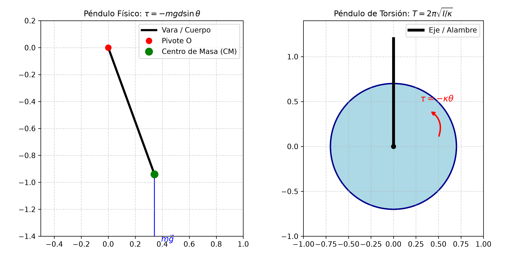
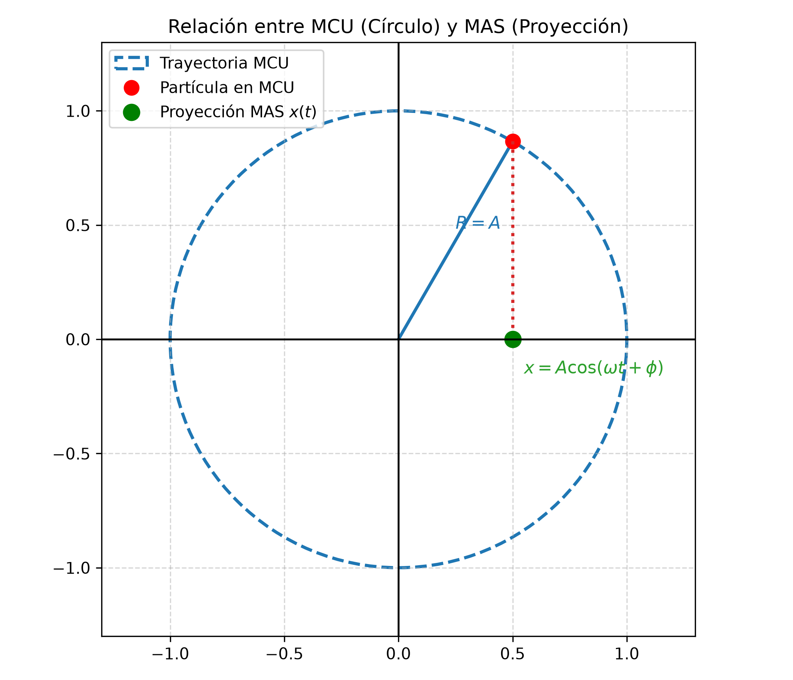

3.3 Sistemas Oscilantes Reales y Avanzados
1. La Intuición Física: Más allá del resorte ideal
En la práctica profesional de la ingeniería y la arquitectura, los sistemas oscilantes rara vez son masas puntuales atadas a un resorte sin peso.
- Cuerpos extensos (Péndulo Físico): Una viga, una pieza de maquinaria o una vara colgada de un extremo no oscilan como una partícula puntual; su distribución de masa e inercia rotacional (\(I\)) determinan la rapidez del movimiento.
- Torsión: Ejes de motores, cables de puentes o barras sometidas a retorcimiento angular experimentan torcas de restitución (\(\tau = -\kappa \theta\)).
- Rodadura: Componentes mecánicos (como cilindros o ruedas) que oscilan combinando movimiento de traslación y rotación sin resbalar.
2. Péndulo Físico vs. Péndulo de Torsión vs. Rodadura
A. Péndulo Físico (Cuerpo Rígido Oscilante)
Es cualquier cuerpo rígido de masa \(m\) suspendido de un pivote \(O\) ubicado a una distancia \(d\) de su centro de masa (\(CM\)).
- Torca de restitución: La componente del peso produce una torca \(\tau = -m g d \sin\theta \approx -m g d \theta\) (para \(\theta < 15^\circ\)).
- Ecuación del Período:
Donde \(I\) es el momento de inercia respecto al eje de rotación \(O\).
Herramienta Clave de Examen (Teorema de Steiner / Ejes Paralelos):
Si conocés el momento de inercia respecto al centro de masa (\(I_{CM}\)), el momento de inercia respecto al pivote a distancia \(d\) es:
$\(I = I_{CM} + m d^2\)$
B. Péndulo de Torsión
Consiste en un cuerpo suspendido de un alambre o varilla vertical. Al girar un ángulo \(\theta\), el alambre ejerce una torca restauradora angular:
Donde \(\kappa\) (kappa) es la constante de torsión del alambre. * Ecuación del Período:
C. Sistemas de Rodadura sin Resbalar (Cilindros / Discos)
Cuando un cilindro de masa \(M\) y radio \(R\) rueda sin resbalar sujeto a un resorte de constante \(k\), la energía cinética total es la suma de la traslación y la rotación:
Como para rodadura pura \(v = \omega_{\text{rot}} R\) e \(I_{CM} = \frac{1}{2} M R^2\):
El factor \(\frac{3}{2}M\) actúa como una "masa efectiva" en la oscilación, dando un período:
3. Relación MAS vs. MCU (Círculo de Referencia)
El Movimiento Armónico Simple se puede interpretar geométricamente como la proyección horizontal (o vertical) de una partícula que realiza un Movimiento Circular Uniforme (MCU) de radio \(R = A\) con velocidad angular constante \(\omega\).
| Movimiento Circular Uniforme (MCU) | Proyección en Movimiento Armónico Simple (MAS) |
|---|---|
| • Partícula girando en círculo de radio \(R = A\) | • Masa oscilando en eje horizontal \(x\) |
| • Ángulo instantáneo: \(\theta(t) = \omega t + \phi\) | • Posición: \(x(t) = A \cos(\omega t + \phi)\) |
| • Rapidez tangencial: \(v_{\text{tg}} = \omega A\) | • Velocidad: \(v_x(t) = -\omega A \sin(\omega t + \phi)\) |
| • Aceleración centrípeta: \(a_c = \omega^2 A\) | • Aceleración: \(a_x(t) = -\omega^2 A \cos(\omega t + \phi)\) |
Nota visual: La posición \(x(t)\) de la masa oscilante es simplemente la sombra proyectada por el punto en movimiento circular sobre el eje \(x\).
- Posición: \(x(t) = A \cos(\omega t + \phi)\)
- Velocidad: \(v_x(t) = -v_{\text{tg}} \sin(\omega t + \phi) = -\omega A \sin(\omega t + \phi)\)
- Aceleración: \(a_x(t) = -a_c \cos(\omega t + \phi) = -\omega^2 A \cos(\omega t + \phi)\)
4. Detector de Trampas de Parcial
| La Trampa del Profesor | El Error Típico | La Verdad Física |
|---|---|---|
| Péndulo Físico: Poner la distancia al extremo en lugar de al \(CM\). | Usar la longitud total de la vara como \(d\). | \(d\) es estrictamente la distancia entre el pivote y el centro de masa (\(CM\)). |
| Rodadura pura: Olvidar la energía rotacional. | Usar \(T = 2\pi\sqrt{M/k}\) para un cilindro que rueda. | La inercia rotacional aumenta el período a \(T = 2\pi\sqrt{\frac{3M}{2k}}\). |
| Péndulo Físico: Usar \(I_{CM}\) directo en la fórmula de período. | Olvidar aplicar el Teorema de Ejes Paralelos. | \(T = 2\pi\sqrt{I/mgd}\) requiere el momento de inercia respecto al pivote, no al \(CM\). |
5. Esquemas Gráficos


6. Ejercicios Resueltos con Análisis Dimensional Explícito
Ejercicio 1: Medición de Momento de Inercia en Péndulo Físico
Consigna: Una vara no uniforme de masa \(m = 1.0 \text{ kg}\) se equilibra sobre su \(CM\) a \(d = 0.42 \text{ m}\) de uno de sus extremos. Si se la hace oscilar suspendida desde ese extremo, registra un período de \(T = 1.6 \text{ s}\).
a) Calcule el momento de inercia \(I\) respecto al pivote.
b) Calcule el momento de inercia \(I_{CM}\) respecto a su centro de masa.
Desarrollo y Cancelación de Unidades:
Paso a): Hallar \(I\) respecto al pivote Despejando de \(T = 2\pi \sqrt{\frac{I}{m g d}}\):
Sustituyendo valores numéricos con sus magnitudes:
Desarrollando las unidades paso a paso:
Operación numérica:
Paso b): Hallar \(I_{CM}\) mediante Teorema de Ejes Paralelos $\(I = I_{CM} + m d^2 \implies I_{CM} = I - m d^2\)$
Sustituyendo con magnitudes:
Ejercicio 2: Cilindro Rodando Sujeto a Resorte
Consigna: Dos cilindros sólidos idénticos de masa total \(M = 3 \text{ kg}\) y radio \(R = 0.08 \text{ m}\) ruedan sin resbalar apoyados en una mesa horizontal, sujetos a un resorte de \(k = 60 \text{ N/m}\). Calcule el período de oscilación \(T\).
Desarrollo y Cancelación de Unidades:
Fórmula deducción de rodadura:
Reemplazando valores y magnitudes:
Analizando y simplificando las unidades de la raíz (recordando que \(1 \text{ N} = 1 \frac{\text{kg}\cdot\text{m}}{\text{s}^2}\)):
Al aplicar la raíz cuadrada \(\sqrt{\text{s}^2} = \text{s}\).
Operación numérica final: